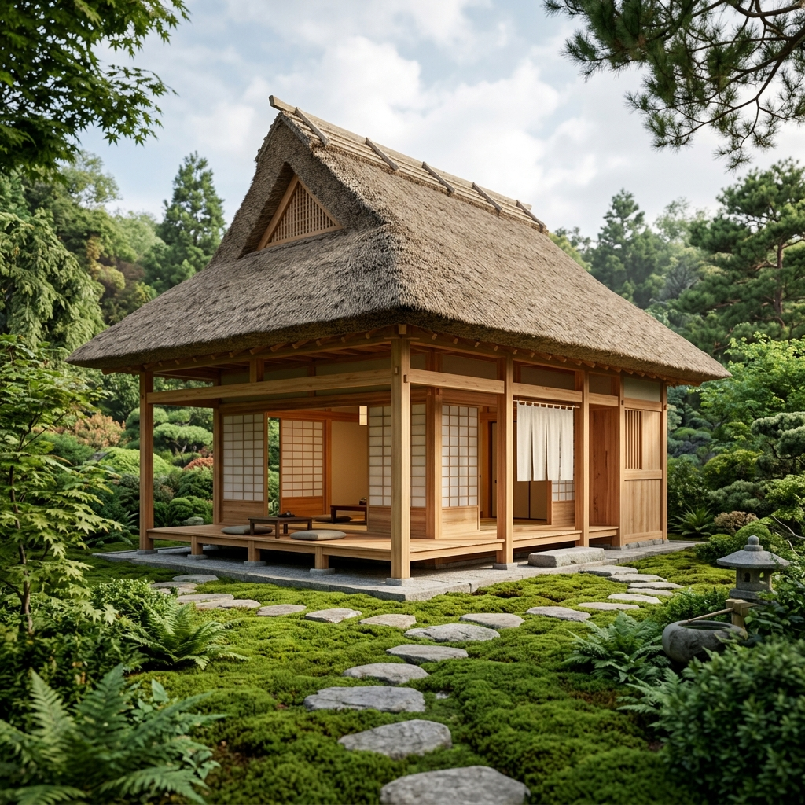
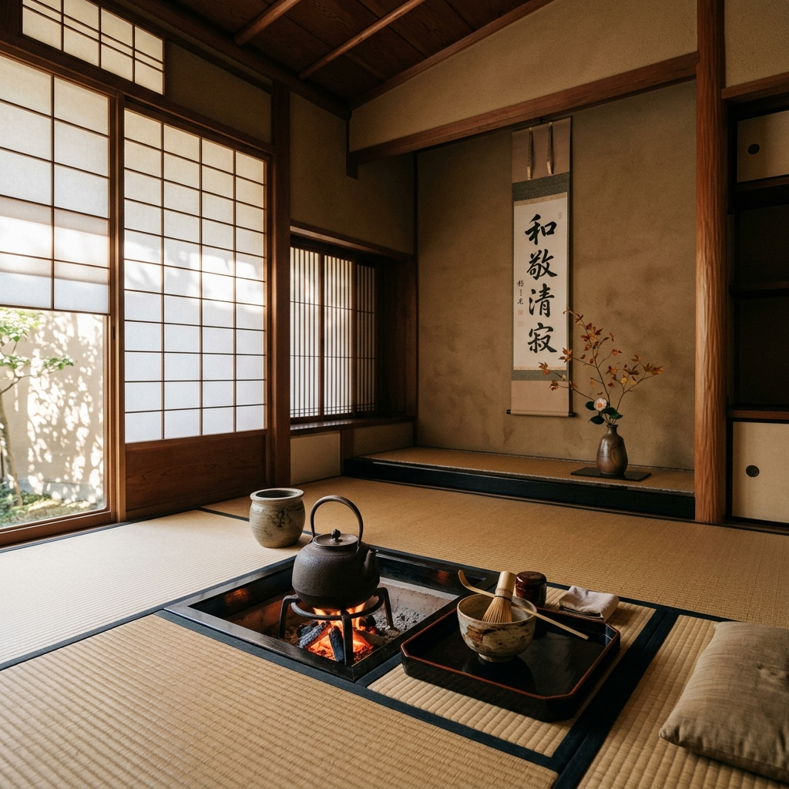
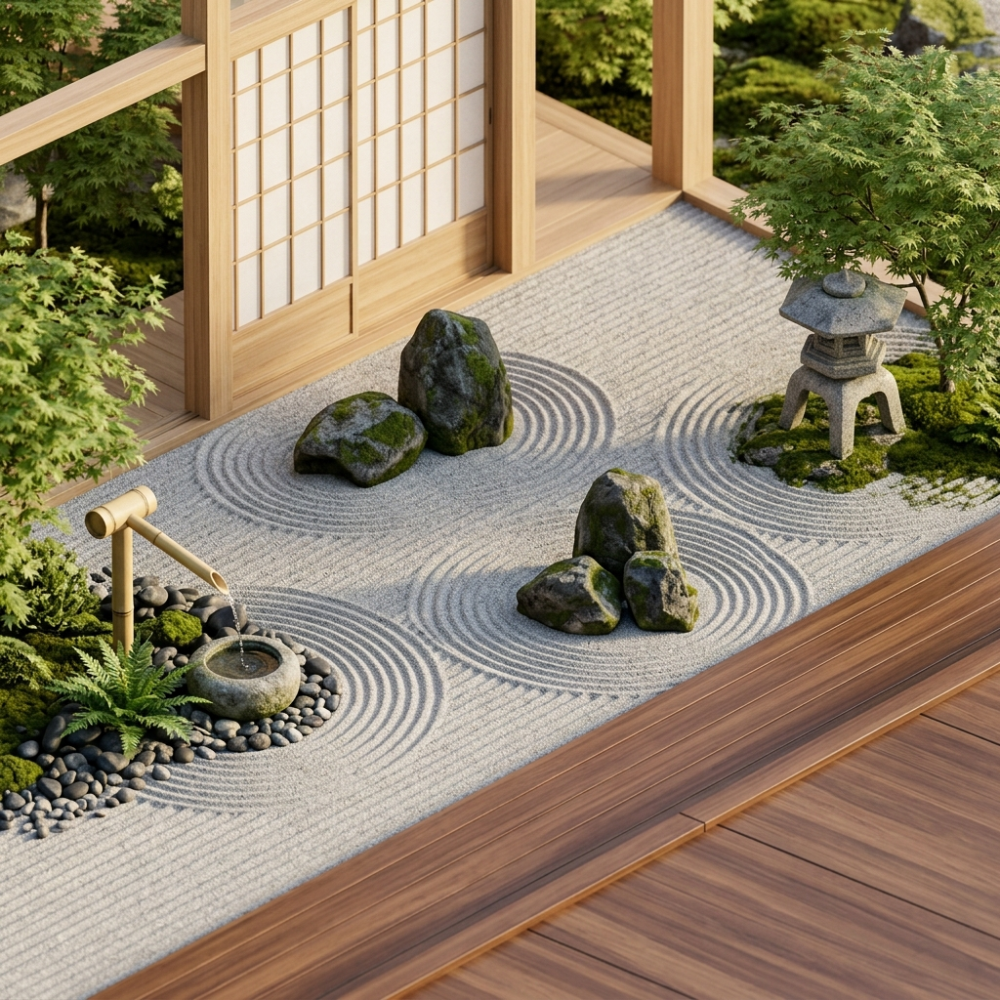
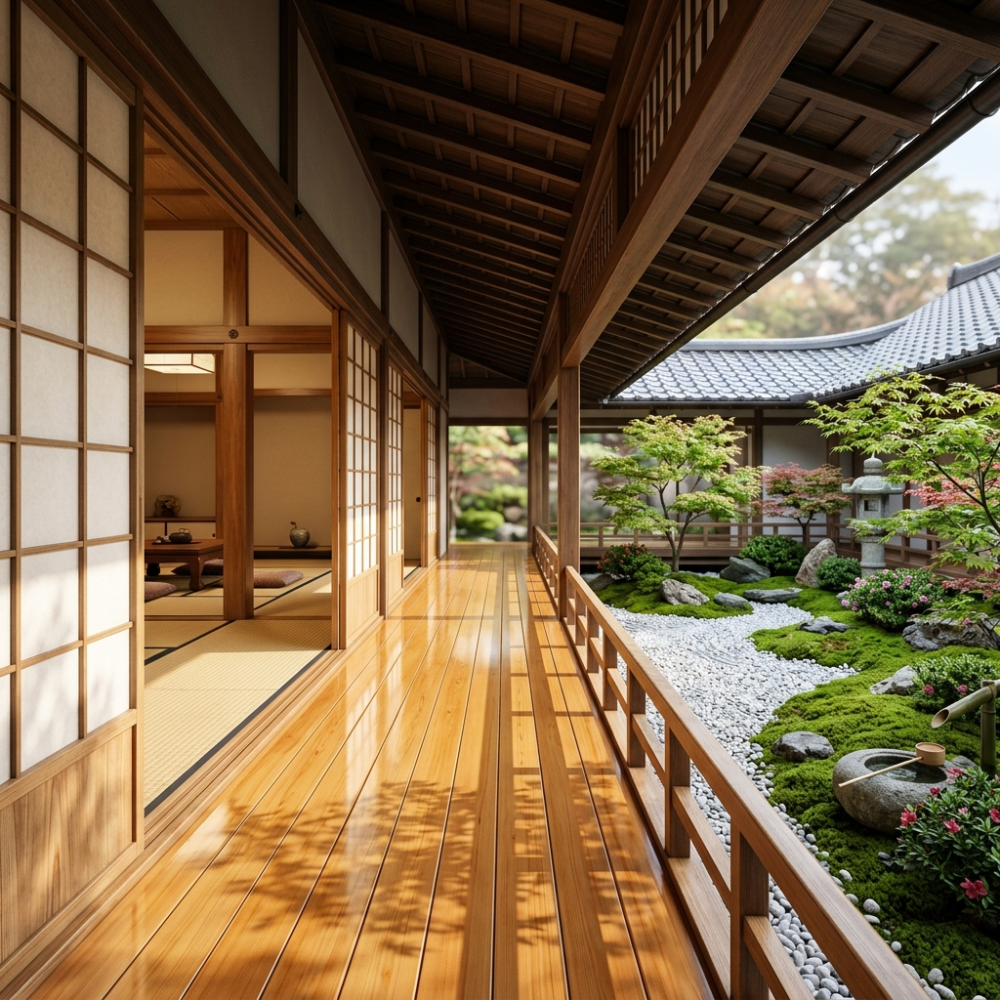

01 / EXTERIOR OVERVIEW
35°24'N, 138°43'E




5-PIN RAKE
SINGLE PIN
Drag on the garden to rake gravel
"To experience the void, one must align with the materials of nature, where Hinoki meets Washi, and silence holds the space."
CLICK ON HOTSPOTS TO EXPLORE DETAILS